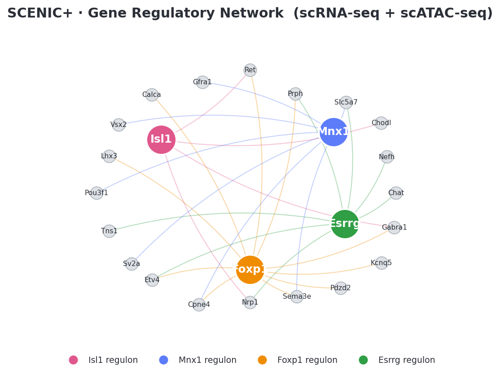
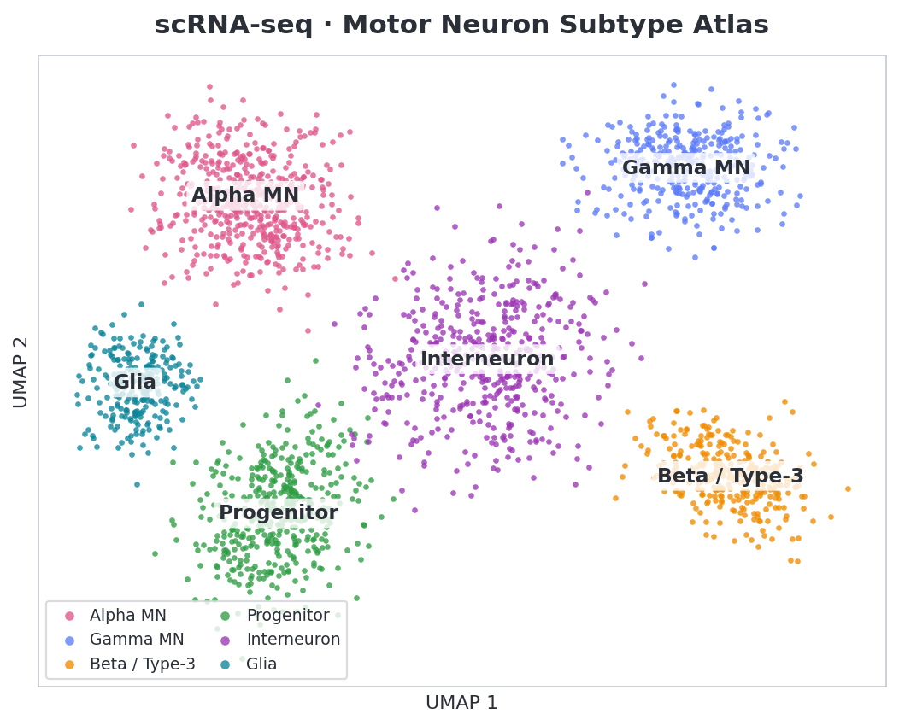
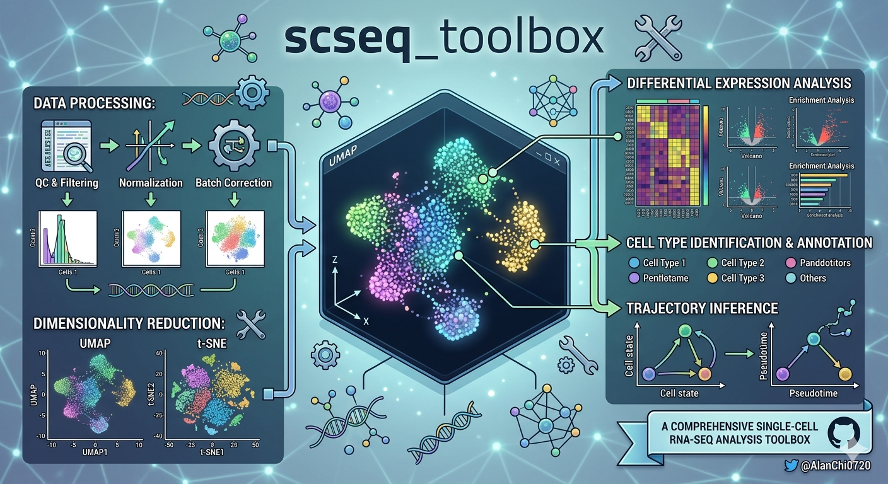
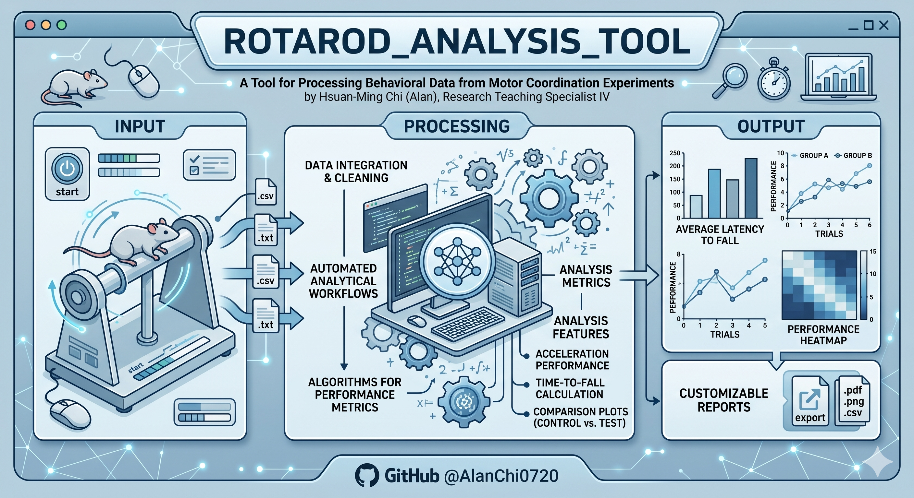
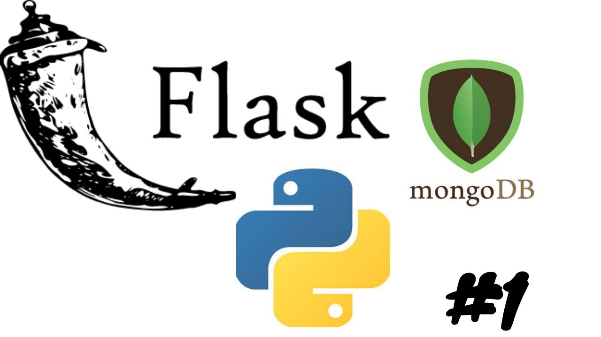

End-to-end multi-omics pipeline integrating scRNA-seq and scATAC-seq data with SCENIC+ to map gene regulatory networks and chromatin accessibility dynamics during motor neuron development. Deployed on the Rutgers Amarel HPC cluster using Snakemake and SLURM for reproducible, scalable execution across large 10X Genomics Multiome datasets.

Single-cell RNA-seq pipeline that identifies and characterizes motor neuron subtypes from 10X Genomics Multiome data. Performs QC, normalization, Leiden clustering, and marker-based annotation to distinguish Alpha MN, Gamma MN, and Beta/Type-3 subtypes using canonical markers (Chat, Mnx1/HB9, Nefh, Chodl, Esrrg). Built with Scanpy and AnnData in Python.


Browser-based scRNA-seq analysis app built with Streamlit and Scanpy. Guides users through a full pipeline — QC, normalization, HVG selection, PCA, Leiden clustering, and UMAP — with interactive decision points for every threshold. Modular step/preset architecture supports h5ad, 10x h5, and mtx inputs and exports reproducibility manifests.

Statistical analysis and visualization tool for rotarod behavioral data. Supports 2-way and 3-way ANOVA (Group × Day × Sex) with per-day Welch t-tests and significance annotation, plus sex-stratified modes. Auto-generates publication-ready plots and stats tables — used to assess motor function in ALS transgenic mouse models. Built with pandas, SciPy, statsmodels, and matplotlib.
Structured self-study curriculum applying ML and deep learning to biology: gene-expression classification (GSE2034), DNA k-mer sequence classification, protein embedding with ESM-2, molecular solubility prediction (ECFP/Morgan fingerprints), and single-cell clustering (PBMC3k). Covers Random Forest, PCA, protein language models, and Leiden-based scRNA-seq workflows with PyTorch, scikit-learn, and RDKit.
Desktop tool for managing mouse colony records in a research lab. Built with Python, Tkinter, and SQLite — tracks cage assignments, mouse IDs, genotypes, and dates of birth. Designed to replace manual spreadsheets and reduce data-entry errors in an active breeding colony.

Python web app for analyzing ski sessions. Upload a GPX file and get interactive maps colored by speed, elevation profiles, and run segment breakdowns — built with Folium for visualization.

Web application built with Flask and MongoDB demonstrating REST routing, form handling, session management, and NoSQL database operations.
Console chess game with a Stockfish AI opponent. Implements the UCI protocol for move notation and wraps the Stockfish engine in Python for interactive play.

Python script automating TypeRacer.com using Selenium WebDriver for DOM interaction and PyAutoGUI for keystroke simulation. Demonstrates browser automation and input simulation techniques.